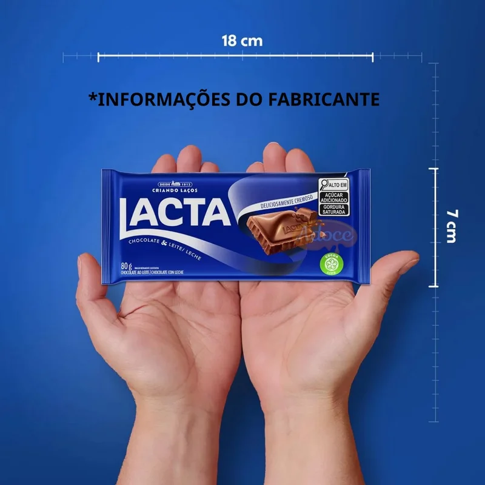

Descrição
A barra clássica de chocolate ao leite Lacta traz um sabor marcante e uma textura deliciosamente cremosa que derrete devagar na boca. É um chocolate macio e adocicado, feito no formato de tablete tradicional de 80 gramas. Ele é ideal para comer sozinho como sobremesa, levar na mochila para um lanche rápido ou compartilhar com amigos.
Ingredientes
A receita da barra Lacta Ao Leite traz uma base clássica de açúcar, massa de cacau, manteiga de cacau e leite em pó, misturada a gorduras e soro de leite para dar mais cremosidade e doçura ao tablete. Para garantir a textura macia que derrete na boca e o aroma gostoso, o doce também leva emulsificantes de soja e aromatizante. Vale o aviso de que o produto contém glúten e lactose, além de derivados de leite e soja, e pode carregar traços de amendoim, avelã, trigo e castanhas por conta do processo de fabricação.